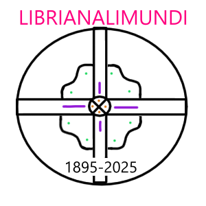

Chocomandio, más conocido en círculos académicos como George Chocolate, nació y se crió en las cálidas costas de Hawái, en el seno de una familia profundamente dedicada al cultivo del cacao y la filosofía existencial. Desde temprana edad, demostró una capacidad inusual para combinar el pensamiento lógico con la dulzura del arte narrativo, lo que le valió una beca completa para cursar sus estudios superiores en la prestigiosa Universidad de Harvard, donde se graduó summa cum laude en Literatura Cuántica Comparada y Filosofía Aplicada del Postrealismo. Durante sus años en Harvard, Alexander destacó no solo por su brillantez académica, sino también por sus ensayos visionarios sobre la influencia de los postres en la estructura narrativa moderna. Su tesis doctoral, titulada "Azúcar y Semántica: una aproximación estructuralista al brownie narrativo", fue aclamada como un hito en la crítica literaria experimental. A lo largo de su carrera, ha publicado más de 20 libros, entre los que se destacan "La sombra del cacao", "Cartas desde un espresso amargo" y "Crónica de un muffin anunciado". Sus obras han sido traducidas a más de 12 idiomas, incluyendo el esperanto dramático y el latín táctil, y han sido objeto de estudio en conferencias internacionales de literatura alternativa. Actualmente, Chocomandio reside en una pequeña isla privada cerca de Tailandia, pues en diversas ocasiones a expresado su gusto por Tailandia, donde continúa escribiendo, meditando y perfeccionando la técnica del haiku triple inverso, una forma poética que él mismo inventó y que aún nadie ha logrado comprender del todo.
Chocomandio es un escritor de libros de ciencia ficción y fantasía. Sus obras son conocidas por su estilo único y su capacidad para crear mundos imaginativos.
Algunas de sus obras más destacadas incluyen:
Chocomandio ha ganado varios premios literarios por su trabajo y es considerado uno de los autores más innovadores de su generación.
|  |
|---|